How to claim your account, log in, tell your ensemble whether you are coming and keep your details up to date.
November 2026
Contents
1About this guideYour own account or a shared login
2Claiming your own accountEvery member can, in a minute
3Logging inPasswords and login links
4Your dashboardWhat is coming up for you
5Replying to a pollSay whether you are coming
6Your details and passwordKeep your profile up to date
7Using a shared ensemble loginThe rehearsal tablet
8Quick referenceWhere to find things
1
About this guide
Readererer is your ensemble's attendance site. You use it to say whether you are coming to each rehearsal and concert, so the committee knows who to expect, who is setting up and who is driving the van.
There are two ways to use it, and this guide covers both:
Account
What it is
Your own account (the Member role)
Yours alone. You log in with your own username, reply to your ensembles' polls and keep your own details up to date. Chapters 2 to 6.
A shared ensemble login (the Ensemble role)
One login for the whole ensemble, for example on a tablet at rehearsals. Anyone can use it to fill in that ensemble's poll, but it cannot see or change anyone's details. Chapter 7.
The green numbers in the screenshots, such as 1, match the numbers in the text beside them. The screenshots were taken on a practice site with made-up ensembles and members, and your site may look a little different: each site chooses its own logo, colour and some of its wording, and can turn features off.
2
Claiming your own account
Every member already has an account: the committee creates it when you join. You do not need a password from anyone to start using it. Any member can claim their own account, as long as the committee has their email address.
From the login page
Open your Readererer site and click Email me a login link under the login form.
Type the email address you gave the ensemble 1 and click Send me a login link2.
Open the email and click its link, then click Log in on the page it opens.
If the site asks, choose a password. You can then log in with your username and password, or with a login link whenever you like.
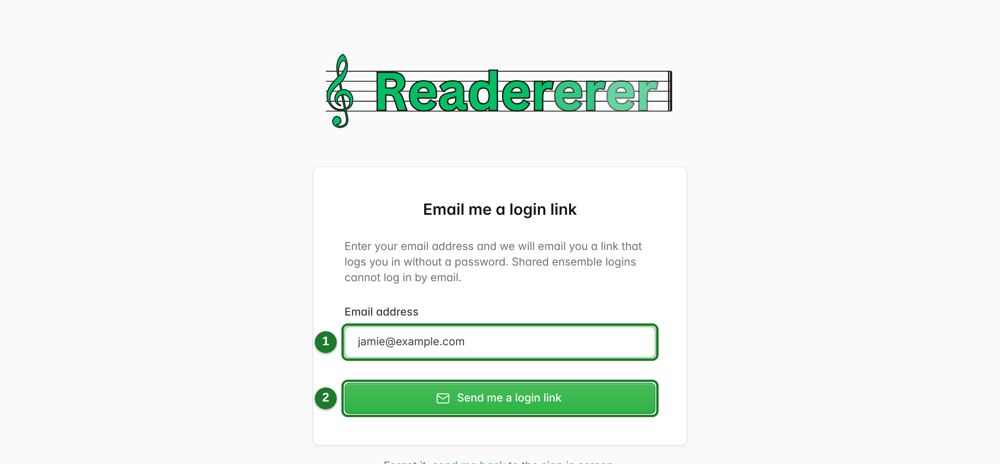
Ask for a login link.
The link works once and expires after an hour. If no email arrives, check your spam folder, then ask a moderator to check the email address on your account. I forgot password on the login page works the same way, and lets you choose a password straight away.
From a shared ensemble login
If your ensemble has a shared login (on a rehearsal tablet, for example) and your site has turned this on, the ensemble's page shows Get your own account.
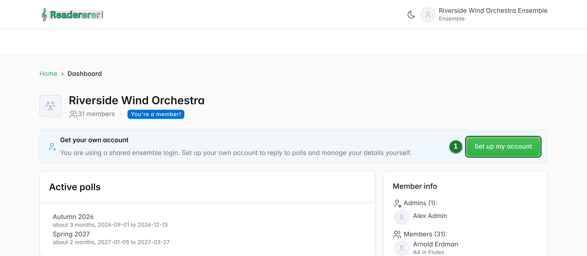
Click Set up my account 1.
Click Set up my account.
Find your name in the list and click Claim1, then confirm.
A login link is emailed to the address on your account. Open it on your own phone or computer, log in and choose a password.
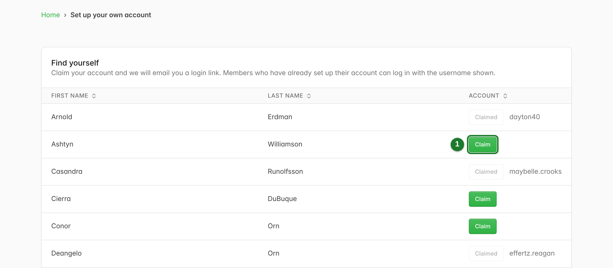
Find yourself and click Claim 1.
Claimed with a username next to it means that account is already set up: log in with that username, or use I forgot password if you have forgotten your password.
No email address: ask an admin means the committee does not have your email yet. Give it to a moderator or admin and try again.
3
Logging in
Open your Readererer site in any web browser, on a phone, tablet or computer. If you are not logged in, you will see the login page.
The login page.
Type your Username1.
Type your Password2. The eye icon shows what you have typed.
Tick Remember me on this device on your own phone or computer, so you stay logged in.
Click Login.
If you cannot log in
I forgot password3 emails you a link to choose a new password.
Email me a login link4 emails you a link that logs you straight in.
If your site has Google login turned on, Login with Google logs you in with the Google account that has your email address.
A link to a poll
If someone sends you a link to a poll and you are not logged in, the site asks you to log in first and then takes you straight to that poll.
4
Your dashboard
After you log in you land on your dashboard. It shows what is coming up for you.
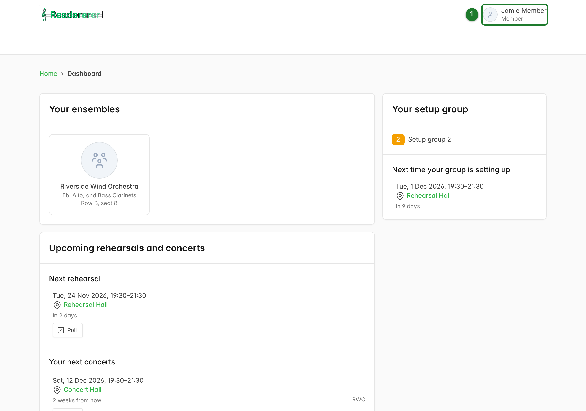
A member's dashboard.
Your ensembles: the ensembles you play in, with your instrument and seat. Click one to see its polls and members.
Upcoming rehearsals and concerts: your next rehearsal and concerts, each with a Poll button to reply.
Your setup group, if your site uses them: your group, and the next time it is setting up and packing away.
Your name at the top right 1 opens your own menu (chapter 6).
The moon icon next to your name switches to dark colours.
5
Replying to a poll
Each ensemble has one poll per term: a grid with a row for every member and a column for every rehearsal and concert. Please reply for every date as early as you can, and change your reply if your plans change.
Open a poll from the Poll button on your dashboard, or from the ensemble's page under Active polls.
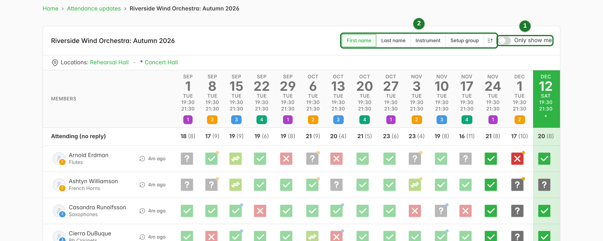
The whole poll. 1 shows only your row; 2 sorts the members.
✓ Attending
✗ Not attending
⇄ Sending a dep, if your site allows it
? No reply yet
Each column heading shows the date and time. If your site uses setup groups, the coloured number underneath is the group setting up that day.
A highlighted column is a concert. A star or other symbol marks a date at a different venue; the venues are listed above the poll.
The Attending (no reply) row counts who is coming, with the number who have not replied in brackets.
Reply for yourself
Turn on Only show me1 to see just your own replies as a list, which is easiest on a phone. The site remembers this for next time.
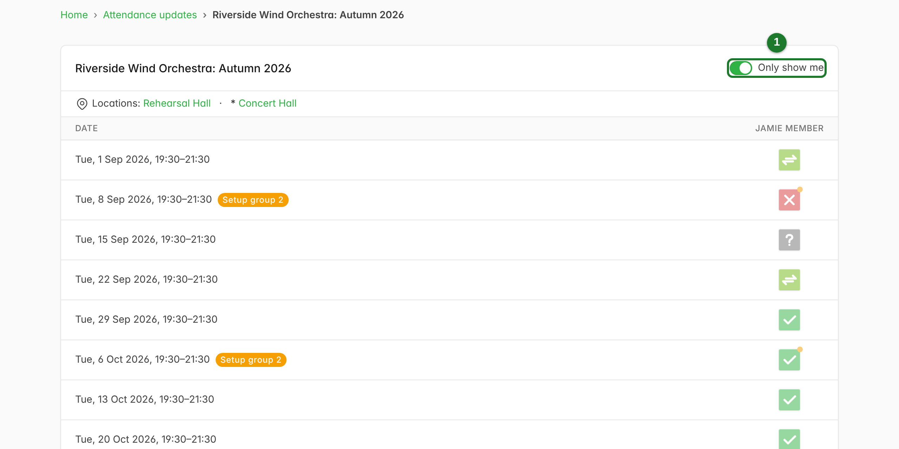
Your own replies. A badge shows when your setup group is on duty or you are driving the van.
Click the box for a date. Each click moves it on: Attending, then Not attending, then Sending a dep (if your site allows deps), then back to Attending.
If you are sending a dep, type their name in Who is coming instead?1.
Change any other dates you need.
Click Save2. Nothing is saved until you do, and the site warns you if you try to leave with unsaved changes.
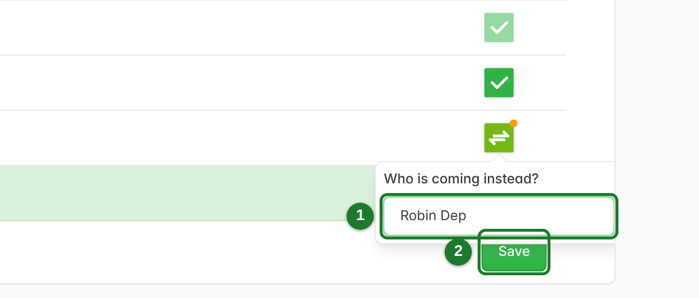
Sending a dep: type their name 1 and click Save 2.
When replies close
You cannot change a reply once the date has started, and, on some sites, once that date's reminder emails have gone out. Those boxes are greyed out. If your plans change after that, tell a moderator or admin, who can still change it for you.
Check you are on your own row
In the full grid you can click any member's boxes, so you can fill in a reply for someone who asks you to. Every change records who made it, so check you are on your own row before you save.
6
Your details and password
Click your name at the top right to open your menu.
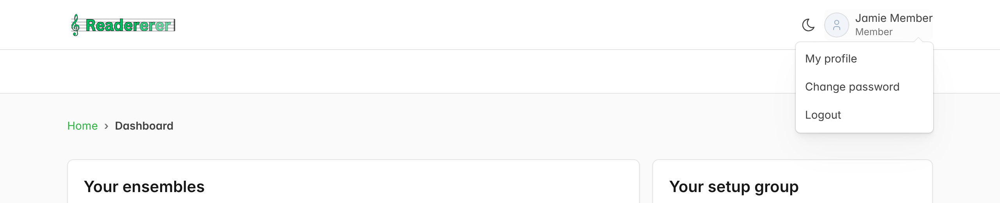
Your menu.
My profile shows your details, ensembles and setup group.
Change password sets a new password. You need your current one.
Logout logs you out. Always log out on a shared computer.
Update your details
Open My profile and click Edit1.
Change your name, email address, phone number, address, emergency contact or any other detail, and add a profile picture if you like.
Click Save details.
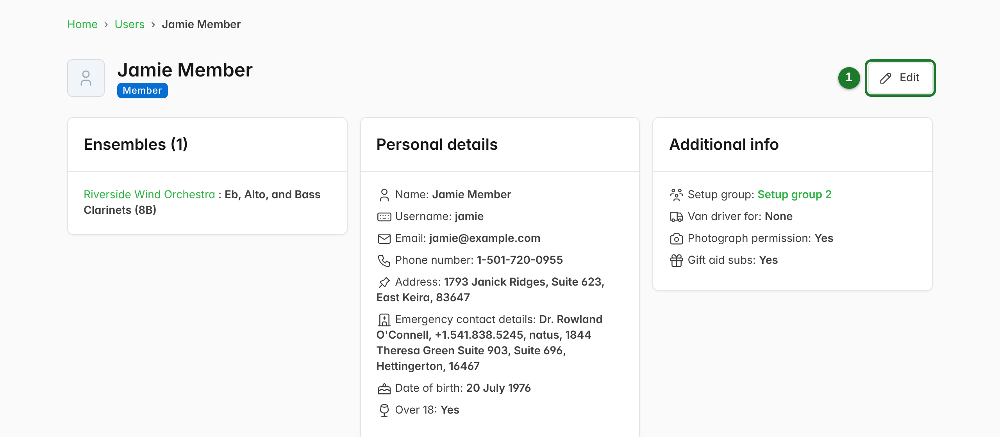
Your profile. Click Edit 1 to change it.
Keep your email address up to date: login links, password resets and reminder emails all go there. You cannot change your own ensembles, instrument, seat or setup group; ask a moderator if any of those are wrong.
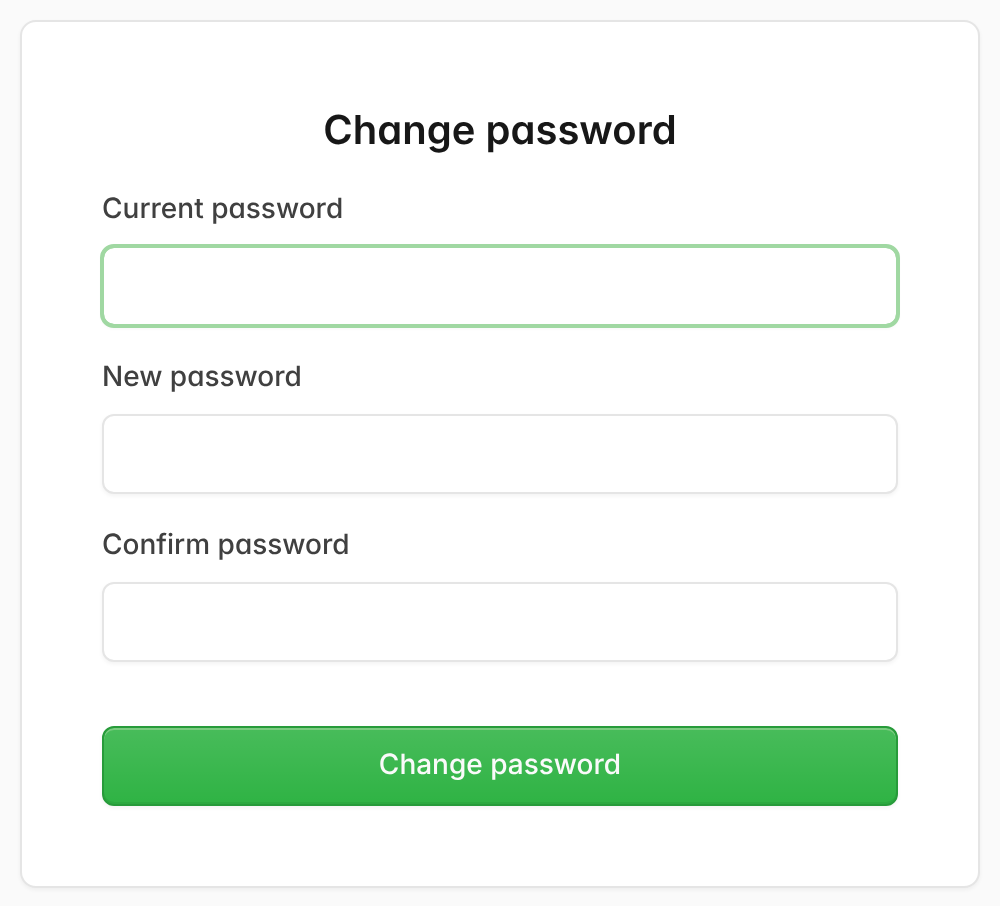
The Change password page.
7
Using a shared ensemble login
A shared ensemble login lets anyone fill in that ensemble's poll from one device, such as a tablet passed round at rehearsals. The committee sets its username and password.
After logging in, it opens the ensemble's page, with its Active polls and upcoming dates. Click a term's poll to open it.
Find your own row, click your boxes and click Save, exactly as in chapter 5. Please only change your own replies.
It can only fill in polls. It cannot see members' details, emails or registers.
It cannot use I forgot password, login links or Google login. If the password stops working, ask an admin.
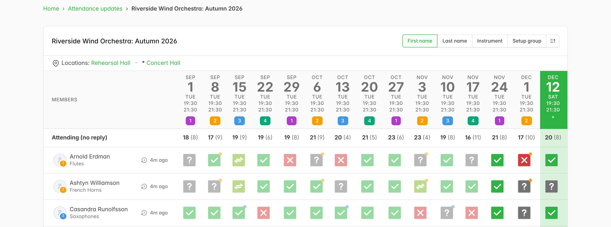
The poll on a shared ensemble login.
Get your own account
A shared login is handy, but your own account is better: you can reply from your own phone at any time and keep your details up to date. Use Set up my account on the ensemble's page, if your site shows it, or Email me a login link on the login page, as chapter 2 describes.
8
Quick reference
I want to…
Go to
Start using my account for the first time
Login page › Email me a login link
Claim my account from the rehearsal tablet
The ensemble's page › Set up my account › Claim
Say whether I am coming
Dashboard › Poll › click my box › Save
See only my own replies
The poll › Only show me
Send a dep
The poll › click my box until it shows ⇄ › type their name › Save